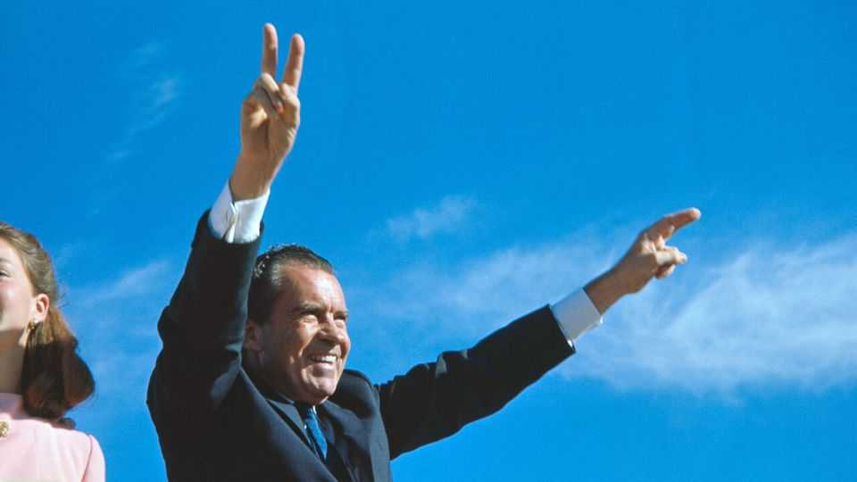

Why Gen-Z conservatives love Richard Nixon
The disgraced president’s revival highlights a generational split among conservatives

Oct 22nd 2026
To looksmaxxing and gymmaxxing now add Nixonmaxxing, an activity to stretch your thinking if not enhance it. Slickly edited videos featuring America’s 37th president, often set to hip-hop beats, have gone viral in recent months. Influencers are donning baseball caps and tote bags embroidered with slogans like “Pretty Girls for Nixon” and “Nixon Now More Than Ever”. Attendance at the Richard Nixon Presidential Library in California is up 30% on last year.
The strange revival of the disgraced late president owes much to the media-savvy millennials running the Richard Nixon Foundation, a non-profit that helps manage the presidential library and, in a newer development, pumps out bite-sized videos. Covering everything from his musings on America’s relationship with Russia to his thoughts on his rivalry with John F. Kennedy, the clips have racked up millions of views. “Love seeing these old Nixon videos resurface”, reads one comment. “They really show the younger generations what a political genius he really was.” Your correspondent, a forlorn Nelson Rockefellermaxxer, recently spent hours scrolling through content to figure out what’s behind the newfound love for Tricky Dick.
Few are hyping up detente or Nixon’s creation of the Environmental Protection Agency. In Gen-Z speak, the enthusiasm is mostly down to vibes. The most popular clips capture Nixon’s bare-knuckle politics and refusal to give up. Some young conservatives see in Nixon an analogue to Donald Trump: two presidents marked by their antagonistic relationships with the press and hounded by investigators. “The Right’s rediscovery of Richard Nixon is not about particular policies,” wrote Chris Rufo, a millennial conservative, on X recently; it’s about “the attitude, and the narrative of the self-made man who won 49 states on behalf of the Silent Majority, and was taken down in a Deep State coup.”
The Trump administration seems to have a similar view. The Department of Justice is reviewing whether the special prosecutor’s office that investigated the Watergate break-in committed misconduct. “If Watergate happened tomorrow it would be like a 12-hour news story,” quipped J.D. Vance, the vice-president, during a talk at the Nixon library in June. “The idea that it would have taken down a presidency is crazy.”
In embracing Nixon, young right-wingers are also rejecting their elders’ worship of Ronald Reagan. The Gipper’s faith in free markets and internationalism is at odds with the MAGA worldview. “Reagan is the baby-boomer god,” says Curt Mills of the American Conservative, a magazine. “And the subtext of so much of what the New Right and younger conservatives think is that old people destroyed this country, and if Reagan is their god, then it must be a false god.”
Alas for keepers of the Nixon flame, he remains one of most unpopular presidents in the country’s history. A burst of Nixonmaxxing is unlikely to fix his reputation anytime soon. Then again, he has been written off before. ■
Stay on top of American politics with The US in brief, our daily newsletter with fast analysis of the most important political news, and Checks and Balance, a weekly note that examines the state of American democracy and the issues that matter to voters.